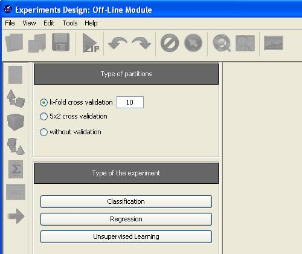
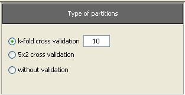
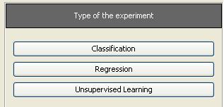

Configuration of experiments
When the Experiments option is selected, the main window of the Experiments module will appear:

First, it is necessary to select the type of experiment and the type of partitions to employ; the options selected will determine the kind of methods and data sets that will be available to design the experiment.
The types of partitions available are the following:

Currently, the KEEL Experiments module offers the following types of experiments:

When the type of experiment has been selected, the data sets selection panel will be shown, allowing continuing the experiment design.